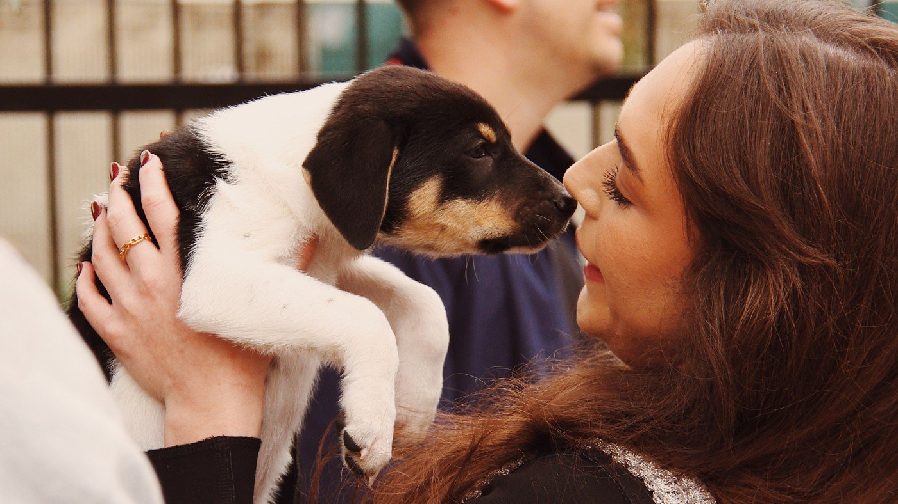

Cães segmentam a fala humana de modo parecido com o nosso, sugere estudo na Science
Como pessoas, cães se apoiam mais em consoantes do que em vogais para achar os limites das palavras, mostram exames de EEG.

Assim como os humanos, os cães parecem se apoiar mais nas consoantes do que nas vogais para identificar onde começam e terminam as palavras na fala, segundo estudo liderado pela Universidade Eötvös Loránd (ELTE), da Hungria, e publicado na revista Science, relata o g1.
A equipe comparou registros de eletroencefalograma de 20 adultos e 20 cães de companhia enquanto ouviam sequências contínuas de palavras sem sentido, de três sílabas. Algumas seguiam padrões baseados em consoantes, outras em vogais, e um terceiro grupo não tinha padrão. Nada no som indicava claramente onde uma palavra acabava.
Mesmo com as vogais mais fortes acusticamente, humanos e cães seguiram preferencialmente os padrões consonantais. O viés apareceu tanto em cães expostos à fala desde cedo quanto mais tarde, o que sugere que o aprendizado estatístico pode bastar para gerá-lo.
Para os autores, o processamento eficiente da fala não depende necessariamente de capacidades linguísticas exclusivas dos humanos. A preferência dos cães pode refletir a domesticação e a convivência com a linguagem humana, ou uma capacidade auditiva mais antiga.